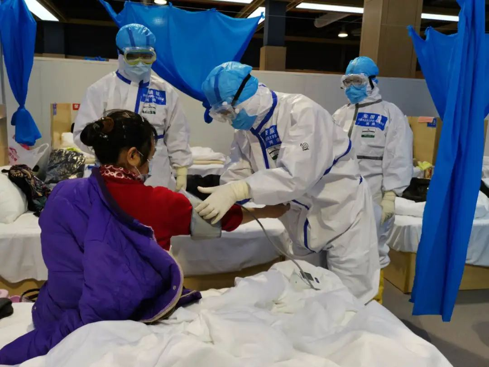

武汉战疫50天：曙光
原文链接 备份链接 24.02.2020本文字数：4461，阅读时长大约7.5分钟 导读：2月19日，也是应勇、王忠林履新一周的日子。这一天，微博平台上有关新冠肺炎患者的求助信息清零了。 作者 | 第一财经 胥会云 北京小汤山医院启用后 …
澎湃新闻记者 段彦超 实习生 王萨丽
“刚到武汉市江夏区方舱医院时，每天轮轴转的高强度工作，我和同事感觉有些吃不消。后来，情况逐渐改善，医护队伍逐渐进入正常的工作状态。”2月24日，国家（河南）中医医疗队成员、河南中医药大学第一附属医院呼吸内科护师李振鹏对澎湃新闻说，情况越来越好，大家战胜疫情的信心倍增。

李振鹏在方舱医院 受访者供图
李振鹏说，等疫情结束，第一件事是向家人报个平安。
李振鹏2月24日抗疫日记：
今天是来武汉第15天，也是进入武汉市江夏区方舱医院的第11天。从2月14日第一个夜班至今天第二次休息，我已经连续上了9个夜班。
连续颠倒的夜班工作和生活，非常辛苦，但想到还有这么多患者没有康复，这些辛苦又算得了什么？我们一路走来，最主要的目的，就是要打赢这场防疫战。我想，在我们的共同努力下，一定会取得最后的胜利，武汉加油！我们一直都在！
都说武汉的樱花十分好看，还有很多美食，我曾想过来武汉游玩。没想到，第一次来武汉，是紧急援助武汉抗疫，方舱内密密麻麻的床位，就是全部风景。
2月10日，我们医疗队33名队员来到江夏区，经过休整、培训后，2月14日正式投入工作。当晚凌晨两点到上午八点是我第一个夜班。
我还记得去上班时，风雨交加，我和队友坐上班车，虽然内心有一些紧张，但大家互相鼓励、支持，我们坚定信心，共同投入到抗疫战斗中去。
目前，我们队管理的86张床位已全部收满，我作为夜班（凌晨四点到上午十点）护理组组长，一般会有3-4名医护护理这些患者，工作量还是比较大的。虽然方舱医院的患者大多为轻症患者，还是有个别病情变化，比较重的。所以，我们除完成当班工作外，要密切观察这些患者的病情变化，随时做好应对。因为连续工作，长时间戴口罩、护目镜，大家脸上都被压出深深的印迹，还有同事鼻梁皮肤都磨破了。不过，这些“最可爱的人”从没报怨过。

李振鹏（左一）和三个同事
我是河南中医药大学第一附属医院呼吸内科护土，从2015年参加工作至今，从来没有参与过这样的抗疫斗争。从疫情发生、主动请战、确认出征、培训考核、前往武汉、入驻方航到投入战斗，我感觉自己学到很多，也成长很多。
这些天，有辛苦，有感动，有收获，有快乐，很累，但也非常充实。我们每天工作是6个小时，但每次要提前1个半小时起床，准备物资、出发，因为我们要坐班车，还要穿防护服，结束后也需要1个半小时脱防护服、坐班车。穿着防护服的6个小时，不能吃饭、喝水、上厕所，而且捂得特别紧，呼吸也不顺畅，浑身是汗，身上有时发痒还没法挠，这些都非常难受。工作中，给患者测量生命体征、发药、发饭，更会大量出汗，身上会特别不舒服。但是，我们都克服了这些困难并适应了它。
病区里，百分之八九十都是轻症患者，除治疗外，我们还会带领患者练习八段锦、经络拍打、太极拳、跳舞，来丰富大家的生活，促进大家锻炼身体，增强抵抗力，患者们也都非常喜欢。这些时候，也是我们最快乐的时光。
当然，也有一些特殊情况的患者，他们的家属在此次疫情中去世了，心情十分低落。有的患者情绪上抑郁、有的患者全家都住进了方舱医院的不同病区，心里总是提心吊胆的，等等。这些患者，我们要关注他们的心理状况，多与他们沟通，疏导他们心理，鼓励他们积极面对疫情，并最终战胜它。
病区很多患者非常配合我们，也很理解我们，会主动帮我们发饭、发药，组织大家一起锻炼，时刻传递正能量，让我们很感动。我们常会听到病人说“感谢你们来支援武汉，你们辛苦了”之类的话，这让我非常感动，同时也感觉自己责任更重。我时常默默告诉自己，不破疫情终不还！
在武汉前，我的家人、朋友都非常担心，一再嘱咐我做好防护，但他们没有说武汉危险你不要去了，因为他们理解我。作为一名医护人员，这是我的责任。当我选择这条路，就应该有这样的勇气和担当。我一定会去，也一定会平安回来，请他们放心，此次战疫还会持续一段时间，但，胜利最终是我们的。
既已身着白衣，便必不会负它。武汉的天气越来越暖和，阳光也十分明媚，我想，再过一个月，当樱花盛开时，疫情的阴霾也会随之消散吧。
加油武汉！加油，最可爱的人们！
本期编辑 邢潭
推荐阅读


原文链接 备份链接 24.02.2020本文字数：4461，阅读时长大约7.5分钟 导读：2月19日，也是应勇、王忠林履新一周的日子。这一天，微博平台上有关新冠肺炎患者的求助信息清零了。 作者 | 第一财经 胥会云 北京小汤山医院启用后 …
原文链接 备份链接 跳广场舞、练瑜伽、打太极、复习备考……每天我们都能从社交媒体上了解到武汉“方舱医院”内患者们的日常生活。这些看似平常的活动，却为紧张的抗疫工作带来了一丝活力与鼓舞。 2月3日晚，武汉市宣布将在武汉国际会展中心、洪山体育 …
原文链接 备份链接 经历了“封城”一个月的武汉，到底怎么样了? 全文2100字，阅读约需4分钟 点击下图进入阅读新京报特别策划 *数据新闻编辑 **陈华罗、李媛 新媒体设计 高俊夫、李亚珍 校对 何燕* ▲300秒回顾武汉战疫：宏大数 …
原文链接 备份链接 层层战略部署之后，武汉保卫战已经开始。这是一场与病毒和传染源赛跑的立体战役。 要想打赢这场战役，我们需要在时间上，跑在病魔之前，调集重兵，救治患者；在空间上，则要寻遍传染源，斩断传播途径，将其隔离。 《三联生活周刊》 …
原文链接 备份链接 江汉方舱医院护士正在收集患者信息。 图：受访者提供 记者：陈鑫 “ 有人已经出院，有人继续等待，他们正在与新型冠状病毒做最后的博弈。 ” 2月12日晚，45岁的老邓做完第二次核酸复查回到病房。即使戴着口罩也能看出他难掩 …